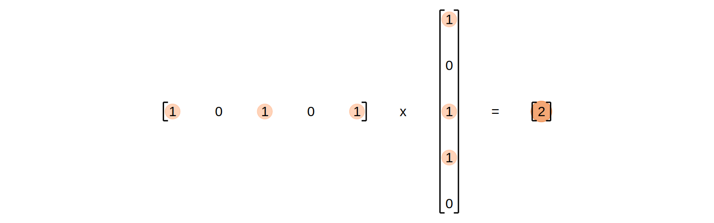
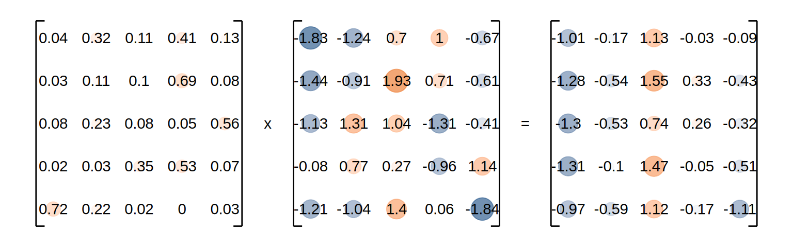

Getting started with (L)LMs
This chapter provides a brief introduction to the history and function of modern language models, focusing on their practical use in text generation tasks. It will then give a short introduction on how to utilize pretrained language models for your own applications.
Language Model Basics
Language models have diverse applications, including speech recognition, machine translation, text generation, and question answering. While we’ll concentrate on text generation for this course, understanding the general concept of language models is crucial. Given language’s inherent complexity and ambiguity, a fundamental challenge in NLP is creating structured representations that can be employed downstream. This section will first explore the evolution of these representations before introducing the transformer architecture, which forms the foundation of most modern language models.
A short history of natural language processing
The Bag Of Words (BOW) method represents text data by counting the frequency of each word in a given document or corpus. It treats all words as independent and ignores their order, making it suitable for tasks like text classification, for which it was traditionally the gold-standard. However, BOW has limitations when it comes to capturing semantic relationships between words and gets utterly useless if confronted with words not represented in the corpus. Additionally, it does not take into account the order of words in a sentence, which can be crucial for understanding its meaning. For example, the sentences “The cat is on the mat” and “The mat is on the cat” have different meanings despite having the same set of words.
The Continuous Bag Of Words (CBOW) method extends traditional BOW by representing words as dense vectors in a continuous space. CBOW predicts a target word based on its context, learning meaningful word representations from large amounts of text data.
fastText (Bojanowski et al., 2017), an open-source library developed by Facebook, builds upon the CBOW method and introduces significant improvements. It incorporates subword information and employs hierarchical softmax for efficient training on large-scale datasets. Even with limited data, fastText can learn meaningful word representations. fastText and its predecessor Word2Vec are considered precursors to modern language models due to their introduction of Embeddings, which laid the foundation for many modern NLP methods. Figure 3.3 illustrates this fastText-architecture1 Figure 3.3 additionally illustrates quite nicely the learning paradigm that modern language models still use - the so called masked language modelling (MLM). This paradigm presents the language model with the semi-supervised task of predicting a masked (i.e., missing) token from a presented sequence of tokenized text. Token means one of the word(-parts) that the model has represented in its vocabulary. This prediction is represented as probabilities of all possible tokens.
1 Well, kind of. One of the major advantages of fasttext was the introduction of subword information which were left out of this illustration to save on space. This meant that uncommon words that were either absent or far and few between in the training corpus could be represented by common syllables. The display like it is here is far closer to fasttext’s spiritual predecessor word2vec (Mikolov et al., 2013).
Language Model Embeddings are learned by predicting the next/missing token in a sequence. The utilisation of word-parts instead of whole words as tokens was another invention introduced by fastText (Bojanowski et al., 2017), that allowed the model to generalize to new, unknown words when moving to inference. Embeddings are the representation the model learns to map the context-tokens to a multiclass classification of the missing token in the space of all possible tokens. These embeddings capture semantic and syntactic relationships between words, enabling them to understand context effectively. Since these embeddings represent the conditional probability distribution that language models learn to comprehend natural language, they can be reused by other models for tasks such as text classification or text retrieval. But more on this later.
Still, these models did not really solve the inherent issue of the order of words in a sentence. The input of models of this generation still used a dummyfied version of the corpus to represent context, which loses a lot of information.
Traditionally, this was approached by feeding these embeddings into Recurrent Neural Networks (RNNs). These models could learn to keep track of sequential dependencies in text data and improve the understanding of context. However, RNNs suffered from their architecture’s inherent inability to retain information over long sequences. Simple RNN- cells2 iterate through a sequence and use both their last output and the next sequence element as input to predict the next output. This makes it hard for them to learn long-term dependencies, since they have to compress all information into one vector (Figure 3.5).
2 And pretty much all of the more complex variants
Long Short-Term Memory (LSTM) networks addressed this issue by introducing a mechanism called “gates” that allowed information to flow through the network selectively and more efficiently, but were, as the RNNs before, notoriously slow in training since only one word could be processed at a time. Additionally, a single LSTM is still only able to process the input sequence from left to right, which is not ideal for inputs that contain ambiguous words that need context after them to fully understand their meaning. Take the following part of a sentence:
The plant was growing
The word plant get’s wildly differing meanings, depending on how the sentence continues:
The plant was growing rapidly in the sunny corner of the garden.
The plant was growing to accommodate more machinery for production.
A model that only processes the input sequence from left to right would just not be able to understand the meaning of “plant” in this context.
The ELMo model (Peters et al., 2018), which stands for Embeddings from Language Models, is an extension of LSTMs that improved contextual word representations. ELMo uses bidirectional LSTM layers to capture both past and future context, enabling it to understand the meaning of words in their surrounding context. This resulted in ELMo outperforming other models of its era on a variety of natural language processing tasks. Still as each of the LSTM-Layer were only able to process one part of the sequence at a time, it was still unfortunately slow in training and inference. Its performance additionally decreased with the length of the input sequence since LSTM-cells have a better information retention than RNNs but are still not able to keep track of dependencies over long sequences.
Attention is all you need
In their transformative paper “Attention is all you need”, Vaswani et al. (2023) described the transformer architecture.
As the paper’s title neatly suggests, the major breakthrough presented in this paper was the introduction of the so-called self-attention mechanism. This mechanism allows the model to “focus” on different parts of the input to a) determine the appropriate context for each word and b) to improve its performance on differing tasks by allowing the model to filter unnecessary information.
Self-Attention Mechanism
The self-attention mechanism relies on three components: Query (Q), Key (K), and Value (V), inspired by concepts in information retrieval. Imagine you search for a specific term in a library (query), match it against the catalogue (key), and use this information about the catalogue to update your personal priority of search terms (value).
In practice, for each word in a sentence, the model calculates:
- Relevance Scores: Compare each Query vector (Q) with every Key vector (K) in the sequence using the dot product. These scores measure how much focus one word should have on another.
- Attention Weights: Normalize the scores using a softmax function to ensure they sum to 1, distributing focus proportionally across all words.
- Weighted Sum: Multiply each Value vector (V) by its corresponding attention weight to compute the final representation.
Calculating Attention
For a sequence of words, the attention scores are computed as: \[ \text{Attention}(Q, K, V) = \text{softmax}\left(\frac{QK^T}{\sqrt{d_k}}\right)V \]
where:
- \(Q\) represents the query matrix.
- \(K\) is the key matrix.
- \(V\) is the value matrix.
- \(d_k\) is the dimensionality of the key vectors, ensuring scale invariance.
Let’s first illustrate this concept with a practical example (not specifically from the context of NLP) to later circle back to its application in the transformer architecture.
We look at a retrieval task in which we query in a domain that has 5 attributes describing the items in it. The aforementioned “lookup” is then implemented by calculating the dot product between the query and the transposed keys resulting in a vector of weights for each input-aspect.
As a simplification, we assume that all aspects can be described in binary terms. A hypothetical 1x5 query matrix (Q) represents the aspects we are querying in a 5-dimensional space, while a transposed 1x5 key matrix (K) represents the aspects of the search space. The dot product between these matrices results in a scalar that reflects the alignment or similarity between the query and the key, effectively indicating how many aspects of the query align with the search space.
If we now add a series of items we want to query for to our matrix \(K\), the result will be a vector representing the amount of matches, each item has with our query:
The result is a vector of scores that indicate the matches of the query per key. This principle does obviously also work for more than one query by adding more rows to our Query matrix \(Q\). This does result in a matrix, in which each row indicates the amount of matching keys for each query:
Instead of binary indicators, the \(Q\) and \(K\) matrices in the attention mechanism are filled with floats. This does still result in the same kind of matched-key-result, although the results are now more like degrees of relevance instead of absolute matches:
\[ Q \times K^T = \]
As you can already see in this small example, the values of individual cells can get relatively high compared to the rest of the matrix. As you remember - we want to use this product to rank our values. If these numbers are too large, it might lead to numerical instability or incorrect results. To address this issue, we will scale down the dot-product by dividing it with \(\sqrt{d_n}\), where \(d_n\) is the dimension of the aspect space (in our case 5).
\[ \frac{Q \times K^T}{\sqrt{d_n}} = \]
Since we want to use this matrix for filtering our dataset, we would prefer the weights to sum up to one. To achieve that, we will apply a softmax function on each row of the matrix (remember that the rows currently represent the key-weighted aspects for each query). The resulting matrix with scaled weights for each aspect is then multiplied with the value-matrix that contains one datapoint in each row, described by 5 aspects along the columns.
\[ \text{softmax}(\frac{Q \times K^T}{\sqrt{d_n}}) \times V = \]

The result is now an attention matrix in the sense that it tells us the importance of each value’s aspect for our query. In the specific example, the third aspect seems to be the most important aspect for our forth query. The crucial advantage is, that all aspects of all queries can be simultaneously compared with all aspects of all values without the necessity of sequential processing.
Though this general idea of weighting aspects in the sense of self-attention3 to process a sequence without disadvantages of the distances of the items was used before (Bahdanau, 2014), the major contribution of the paper was the complete reliance on this mechanism without the need of LSTM/RNN parts. That their suggested architecture works is in part due to the utilisation of multiple self-attention layers, each learning its own weights for \(Q\), \(K\) and \(V\). This allows the model to learn more complex patterns and dependencies between words in a sentence. You can think of it as allowing the model to focus on different parts of the input sequence at different stages of processing. The outputs of the multiple heads are then concatenated and linearly transformed into the final output representation using a series of fully connected feed-forward layers.
3 self in the sense of the model weighting its own embeddings, queries, keys and values
This small example is already pretty close to the general attention-mechanism described by Vaswani et al. (2023) (see also Figure 3.6), though the actual language model learns its own weights for \(Q\), \(K\) and \(V\).
Instead of 5x5 matrices, the attenion mechanism as described in the paper implements \(d_n \times d_c\)4 matrices, where \(d_n\) is the dimension of the embedding space5 and \(d_c\) is the size of the context window. In the original paper, Vaswani et al. (2023) implement the context-window as the same size as the embedding space (i.e., \(d_n = d_c\)). In Figure 3.7 you can see a brilliant illustration of the multiheaded-attention mechanism at work.
4 \(\frac{d_n}{h} \times \frac{d_c}{h}\) actually, the paper used feed-forward layers to reduce the dimensionality of each attention header to reduce the computational cost.
5 I.e., the dimensionality used to represent each word’s meaning. In the previous toy-example illustrating the concept of embeddings (Figure 3.4), this would be the width of the hidden layer (8). In the case of transformers, this is usually 512 or 1024. These embeddings are learned during training and are a simple transformation of the one-hot vectors returned by the models tokenizer.
The implementation of the multi-headed attention mechanism allowed to solve all major issues of the language modelling approaches of the previous generation6. It firstly allows the input of a whole text-sequence at once, rendering the training and inference far speedier then the recursive approaches. Furthermore, the multi-head attention mechanism allows the model to focus on different parts of the input sequence simultaneously, enabling it to capture more complex relationships between words and improve its understanding of context without losing information about long-term dependencies. This mechanism also implicitly solves the bidirectionality-issue since each word can be taken into account when processing every other word in the sequence.
6 Well, kind of. Transformers are far superior language models due to their ability to parallely process long sequences without issues with stretched context - these advantages come at a price though. GPT-3s training is estimated to have emitted around 502 metric tons of carbon (AIAAIC - ChatGPT training emits 502 metric tons of carbon, n.d.). The computational cost of the architecture as described here does additionally scale quadratically with context window size.
The description until now omitted one final but key detail - we only spoke about the weight matrices \(Q\), \(K\) and \(V\). Each of these weight matrices are actually the product of the learned weights and the input vectors. In other words, each of the three matrices is calculated as follows:
\[ \begin{array}{lcl} Q &=& XW_Q \\ K &=& XW_k \\ V &=& XW_v \end{array} \]
where \(W_{Q, k, v}\) are the learned weight matrices and \(X\) is the input matrix. This input matrix consists of a) the learned embeddings of the tokenized input-parts and b) the added, so called positional encoding.7
7 While we are talking about omitted details, the whole architecture implements its layers as residual layers. This means that the output of each layer is added to the input of the layer before, before it is passed on to the next layer. But this detail is irrelevant for our understanding of the central mechanism.
The positional encoding is a vector that encodes the position of each token in the input sequence. It is added to the embedding of each token to provide the model with information about the order of the tokens in the sequence. The positional encoding is calculated as follows:
\[ \begin{array}{lcl} PE_{(pos, 2i)} &=& sin(\frac{pos}{10000^{\frac{2i}{d_{model}}}}) \\ PE_{(pos, 2i+1)} &=& cos(\frac{pos}{10000^{\frac{2i}{d_{model}}}}) \end{array} \]
Where \(i\) is the dimension and \(pos\) is the position. Those 2 formulas are not the most intuitive, what they do is to add a unique offset to each embedding though, that allows the model to infer and weigh the token’s positions in the matrix on it’s own. Figure 3.8 illustrates the pattern this specific combination of sin and cos creates for each sequence-position and embedding-dimension.
These parts alltogether are all building-blocks of the basic transformer architecture. As you can see in Figure 3.9, all parts depicted by Vaswani et al. (2023) are parts we have discussed until now.
The Encoder half uses the embedding -> encoding -> multi-headed-attention -> feed-forward structure to create a semantic representation of the sequence. The Decoder half uses the same structure, but with an additional masked multi-head attention layer to prevent the model from looking at future tokens. This is necessary because we want to generate a sequence token by token.
The architecture described by Vaswani et al. (2023) implements both an encoder and a decoder half. In practice, many modern language models do not use this full architecture. Instead, they implement either encoder-only or decoder-only variants, each optimized for different tasks.
Encoder-only models like BERT (Devlin et al., 2019) use bidirectional attention across the entire input sequence. Since they can attend to all tokens simultaneously, they excel at tasks requiring deep understanding of complete contexts - such as text classification, named entity recognition, or semantic similarity. These models cannot generate text sequentially since they process all tokens at once.
Decoder-only models like GPT (Radford et al., 2018) use masked attention to prevent tokens from attending to future positions. This unidirectional constraint makes them naturally suited for autoregressive generation, where each token is predicted based only on preceding context. While this limits their ability to leverage future context, it enables them to generate coherent text token by token. Encoder-decoder models retain both components and are primarily used for sequence-to-sequence tasks like translation or summarization, where the encoder processes the input and the decoder generates the output.
The choice between these architectures represents a fundamental trade-off between understanding and generation capabilities. For an interactive visualization of a decoder-only architecture in action, this visualization by Brendan Bycroft provides an excellent walkthrough of how tokens flow through each layer during inference.
Figure 3.10, taken from Kaplan et al. (2020), shows the test performance of Transformer models compared to LSTM-based models as a function of model size and context length. Transformers outperform LSTMs with increasing context length.
Furthermore, Kaplan et al. (2020) and Hoffmann et al. (2022) after them postulated performace power-laws (see also Figure 3.11) that suggest that the performance of a Transformer directly scales with the models size and data availability. Though the task of prediction of natural language poses a non-zero limit to the performance, it is suggested that this limit is not reached for any of the currently available models.8
8 Incidentally, we might run out of data to train on before reaching that limit (Villalobos et al., 2024).
The advances made through leveraging transformer-based architectures for language modelling led to a family of general-purpose language models. Unlike the approaches before, these models were not trained for a specific task but rather on a general text base with the intention of allowing specific fine-tuning to adapt to a task. Classic examples of these early general-purpose natural language generating Transformer models are the Generative Pre-trained Transformer (the predecessor of ChatGPT you all know), first described in Radford et al. (2018), and the “Bidirectional Encoder Representations from Transformers” (BERT) architecture and training procedure, described by Devlin et al. (2019).
This general-purpose architecture is the base of modern LLMs as we know them today and most applications we will discuss in this course.
Choosing open source models
The 2023 release of ChatGPT by OpenAI has sparked a lot of interest in large language models (LLMs) and their capabilities. This has also led to an increase in the number of available open-source LLMs. The selection of a model for your application is always a trade-off between performance, size, and computational requirements.
Although Kaplan et al. (2020) showed a relationship between performance and model-size, the resources available will most probably limit you to smaller models. Additionally, a lot of tasks can be solved by smaller models if they are appropriately fine-tuned (Hsieh et al., 2023).
A good idea when choosing an open source model is to start small and test whether the performace is sufficient for your use case. If not, you can always try a larger model later on.
Additionally, it is good practice to check the license of the model you want to use. Some models are only available under a non-commercial license, which means that you cannot use them for commercial purposes.
Thirdly, you should make sure that the model you choose is appropriate for your use case. For example, if you want to use a model for text generation, you should make sure that it was trained on a dataset that is similar to the data you will be using. If you want to use a model for translation, you should make sure that it was trained on a dataset that includes the languages you are interested in. A lot of usecases do already have benchmark datasets that can be used to pit models against each other and evaluate there appropriateness for a given use case based on a few key metrics.
A good starting point for getting an overview about such metrics and benchmarks is Hugging Face. This platform has long cemented itself as the go-to place for getting access to open source models, but also provides a lot of resources for evaluating and comparing them. This page provides an overview of benchmarks, leaderboards and comparisons for a variety of tasks.
Basics of using open source models
Note📝 Task
Now it is your turn! In your project-groups, you will each have to build a small application that uses an open source model to generate code.
Choose a small model (< 3B parameters) using the sources we discussed before.
Each group is to use one of the following frameworks from python to load and use the model:
All APIs above use the de facto standard of the OpenAI API scheme. This scheme presents multiple POST-endpoints, of which we will mostly use the chat-completion.
Your task is to prompt the model to generate a Python program that prints “Hello World” to the console. Use the following prompt:
Write a Python program that prints "Hello World" to the console.
Provide only the code without any explanations.You can either directly call the API using python requests:
import os
import requests
import json
response = requests.post("http://<your API endpoint>:<port>/v1/chat/completions",
json = {
"model": "qwen2.5-coder-1.5b",
"messages":[
{
"role": "user",
"content": "Write a Python program that prints \"Hello World\" to the console. Provide only the code without any explanations."
}
]})
result = json.loads(response.content.decode())["choices"][0]["message"]["content"]
print(result)Or you can call it using the wrapper in the OpenAI-python-module:
import os
from openai import OpenAI
client = OpenAI(
api_key='lm-studio',
base_url="http://<your API endpoint>:<port>/v1"
)
chat_completion = client.chat.completions.create(
messages=[
{
"role": "user",
"content": "Write a Python program that prints \"Hello World\" to the console. Provide only the code without any explanations."
}
],
model="qwen2.5-coder-1.5b",
)
print(chat_completion.choices[0].message.content)Test whether the generated code executes correctly.
Present your results and your experiences with the frameworks to the course. Cover the following aspects:
- Model selection rationale
- Setup process and challenges
- Generated code quality
- Framework usability
Submit your code and a brief report less than a page on moodle.
Further Readings
This quite high-level blog-article about foundational models by Heidloff (2023)
The Attention is all you need-paper (Vaswani et al., 2023) and the brilliant video discussing it by Umar Jamil (Umar Jamil, 2023)
This very good answer on stack exchange that explains the attention-concept ((https://stats.stackexchange.com/users/95569/dontloo), n.d.)
References
AIAAIC - ChatGPT training emits 502 metric tons of carbon. (n.d.). https://www.aiaaic.org/aiaaic-repository/ai-algorithmic-and-automation-incidents/chatgpt-training-emits-502-metric-tons-of-carbon.
Bahdanau, D. (2014). Neural machine translation by jointly learning to align and translate. arXiv Preprint arXiv:1409.0473. https://arxiv.org/abs/1409.0473
Bojanowski, P., Grave, E., Joulin, A., & Mikolov, T. (2017). Enriching Word Vectors with Subword Information (arXiv:1607.04606). arXiv. https://doi.org/10.48550/arXiv.1607.04606
Devlin, J., Chang, M.-W., Lee, K., & Toutanova, K. (2019). BERT: Pre-training of Deep Bidirectional Transformers for Language Understanding (arXiv:1810.04805). arXiv. https://doi.org/10.48550/arXiv.1810.04805
Heidloff, N. (2023). Foundation Models, Transformers, BERT and GPT. In Niklas Heidloff. https://heidloff.net/article/foundation-models-transformers-bert-and-gpt/.
Hoffmann, J., Borgeaud, S., Mensch, A., Buchatskaya, E., Cai, T., Rutherford, E., Casas, D. de L., Hendricks, L. A., Welbl, J., Clark, A., Hennigan, T., Noland, E., Millican, K., Driessche, G. van den, Damoc, B., Guy, A., Osindero, S., Simonyan, K., Elsen, E., … Sifre, L. (2022). Training Compute-Optimal Large Language Models (arXiv:2203.15556). arXiv. https://doi.org/10.48550/arXiv.2203.15556
Hsieh, C.-Y., Li, C.-L., Yeh, C.-K., Nakhost, H., Fujii, Y., Ratner, A., Krishna, R., Lee, C.-Y., & Pfister, T. (2023). Distilling Step-by-Step! Outperforming Larger Language Models with Less Training Data and Smaller Model Sizes (arXiv:2305.02301). arXiv. https://doi.org/10.48550/arXiv.2305.02301
(https://stats.stackexchange.com/users/95569/dontloo), dontloo. (n.d.). What exactly are keys, queries, and values in attention mechanisms? Cross Validated.
Hussain, Z., Binz, M., Mata, R., & Wulff, D. U. (2024). A tutorial on open-source large language models for behavioral science. Behavior Research Methods, 56(8), 8214–8237. https://doi.org/10.3758/s13428-024-02455-8
Kaplan, J., McCandlish, S., Henighan, T., Brown, T. B., Chess, B., Child, R., Gray, S., Radford, A., Wu, J., & Amodei, D. (2020). Scaling Laws for Neural Language Models (arXiv:2001.08361). arXiv. https://doi.org/10.48550/arXiv.2001.08361
Mikolov, T., Chen, K., Corrado, G., & Dean, J. (2013). Efficient Estimation of Word Representations in Vector Space (arXiv:1301.3781). arXiv. https://doi.org/10.48550/arXiv.1301.3781
Peters, M. E., Neumann, M., Iyyer, M., Gardner, M., Clark, C., Lee, K., & Zettlemoyer, L. (2018). Deep contextualized word representations (arXiv:1802.05365). arXiv. https://doi.org/10.48550/arXiv.1802.05365
Radford, A., Narasimhan, K., Salimans, T., & Sutskever, I. (2018). Improving language understanding with unsupervised learning.
Umar Jamil. (2023). Attention is all you need (Transformer) - Model explanation (including math), Inference and Training.
Vaswani, A., Shazeer, N., Parmar, N., Uszkoreit, J., Jones, L., Gomez, A. N., Kaiser, L., & Polosukhin, I. (2023). Attention Is All You Need (arXiv:1706.03762). arXiv. https://doi.org/10.48550/arXiv.1706.03762
Villalobos, P., Ho, A., Sevilla, J., Besiroglu, T., Heim, L., & Hobbhahn, M. (2024, June). Position: Will we run out of data? Limits of LLM scaling based on human-generated data. Forty-First International Conference on Machine Learning.